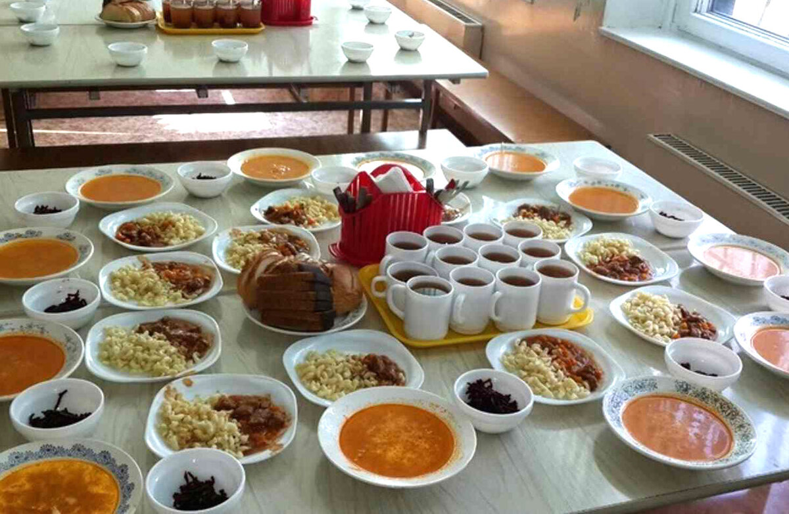

Новость для школьников
Такого даже в Советском Союзе не было. Бесплатно питались, только дети из многодетных и малообеспеченных семей, остальные оплачивали. Надеемся, качество бесплатного питания, не будет уступать платному. Будем отслеживать и контролировать, как питаются наши дети.
Дата публикации: 14 августа 2020